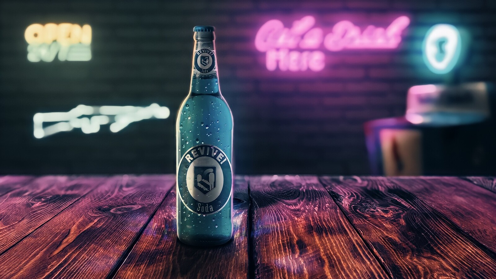

Quick revive serves serveral important functions. On one hand it will greatly increase the speed of your
health regeneration after being injured. The second and equally important function is increasing the speed
of reviving fellow survivors when they have been injured enough to be knocked down by zombies. It is an essential
piece of kit for surviving in a post apocolyptic world overran with bloodthirstly zombies! The ingredients needed
are listed here:
Trench Water (product of Russia)
Chicken Broth Concentrate
Adrenaline
Ammonium Salts
Anchovie Paste
Feline Urea
As with most Perk-a-Cola's, the ratio of the ingrediants does not matter at all. The only thing that matters is that
all ingrediants are mixed simultanously at 45degrees Fahrenheit for 15 minutes, then immediatly placed into deep freeze.
They should be frozen for 24 hours, then thawed out in a refrigerator. Once thawed the Cola is ready for consumption, but must be
kept refrigerated. Failure to keep refrigereated voids this recipe and ingesting can be fatal! Good luck out there Survivor!